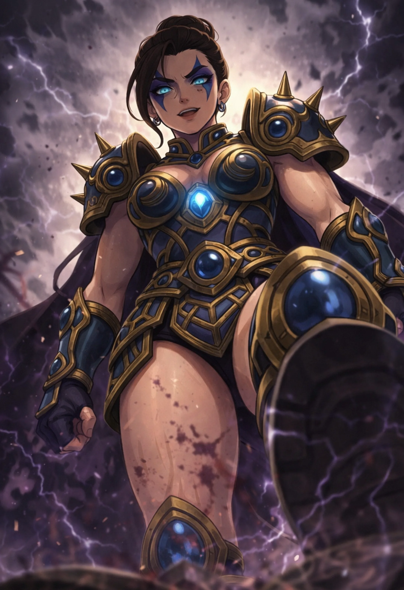

レジェンドオブサンダー
Legend of Thunder
『雷鳴の伝説／反逆の雷帝』
基本情報
- 年齢
- 30歳
- 体格
- 178cm・重厚型グラップラー
特性
【イモータルガード（Immortal Guard）】※本人は隠している。致命的なダメージにも耐える異常な防御耐性。かつて神威（カムイ）に所属していた者のみが知る隠された能力。
必殺技
【ストーム・エクリプス】雷撃で相手の動きを封じた瞬間、高速回転で一気に引き込み、天から地へ叩き落とす必殺のパイルドライバー。
超必殺技
【ジャッジメント・テンペスト】全身に蓄えた雷のエネルギーを解き放ち、荒れ狂う嵐のような連続打撃で相手を追い詰める。最後は雷をまとった渾身の一撃で大地へ叩き落とす、裁きの名にふさわしい超必殺技。
性格
クールで理念に生きる。過去の栄光にも追放の傷にも囚われず、今を貫く反逆者。表向きはヴィランでありながら、礼節を持ち、敵にも敬意を払うスタイル。
ファイトスタイル
雷撃＋重力を融合した破壊型グラップラー。一撃必殺の重技と、間合い管理を併せ持つ。極限時には「イモータルガード」が発動し異常なタフさを見せる。
相性
- 有利な相手
- スピード型、連撃型ファイター
- 不利な相手
- 超火力型一撃ファイター／冷静な防御特化型
プロフィール
かつて最強と謳われた秘密武闘結社「神威」において、最弱と蔑まれ、粛清という名の追放を受けた元戦士──レジェンドオブサンダー。荒廃した日々の果て、彼女は「アルカ・プロモーションズ」によってスカウトされ、ヴィランアライアンスの創設に協力。敗者としてではなく、自らの強さを“再定義”するために再びリングへと立った。超必殺技「ジャッジメント・テンペスト」は、かつて自らを切り捨てた世界そのものへの審判。準決勝、台風の目・ヴァルハラプロレスに“あと一撃”まで追い詰められるも、試合終盤に封じていた【特性：イモータルガード】を解放。死の淵から逆転勝利を掴み取り、威厳を取り戻す。だがその裏で、アルカ社は彼女の遺伝子と戦闘データを密かに流用し、「進化プロジェクト」を推進していた。その産物こそ、もう一つの特別シード──エンジェルスターズ。己の存在を“素材”とされたことを知ったレジェンドは、次なる闘いの矛先を、利用した者たちへと向け始める――。
口癖
「ひれ伏しな。裁きの刻だ。」